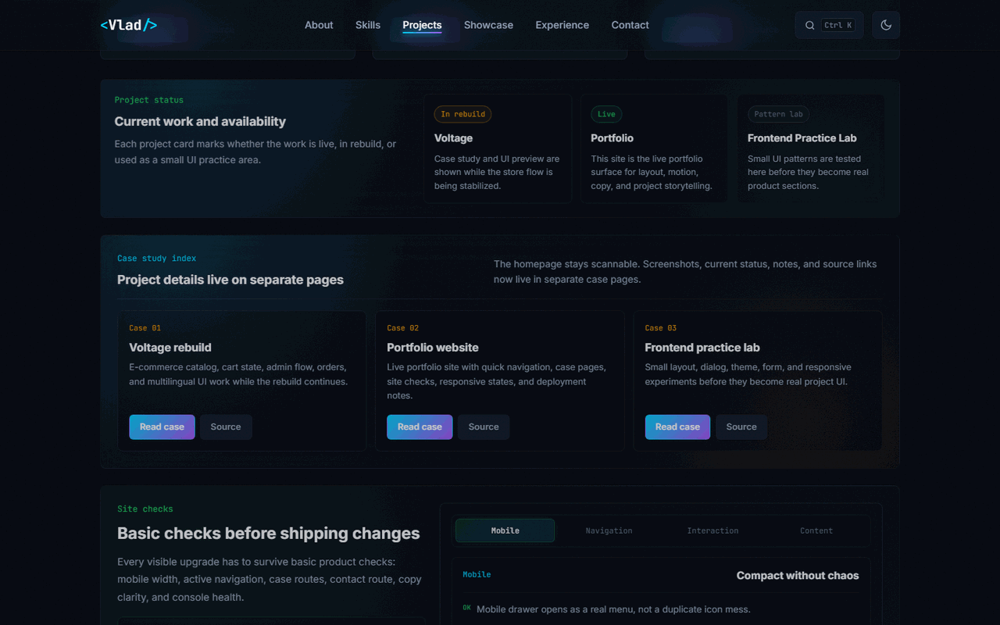

Small patterns before they become product UI
The lab is a controlled place for layouts, filters, dialog behavior, theme states, form feedback, and responsive pressure. It keeps experiments useful instead of decorative.

Reduce guesswork before building bigger screens
Each experiment has to answer a practical UI question: spacing, wrapping, active states, feedback timing, or mobile behavior.
Voltage and portfolio systems
The lab feeds project cards, route panels, quick links, dialog structure, theme polish, and contact feedback.
Keep only useful patterns
If a pattern does not improve inspection, contact, responsiveness, or a real project case, it gets removed or rewritten.